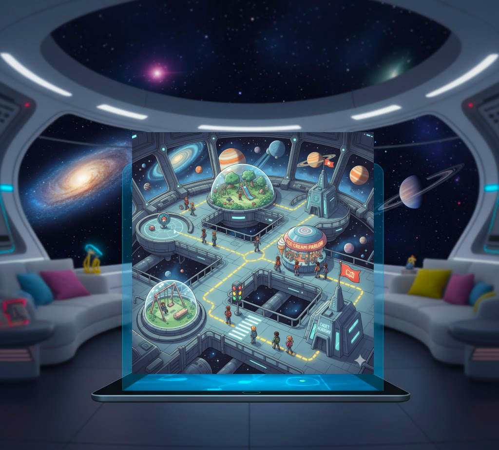
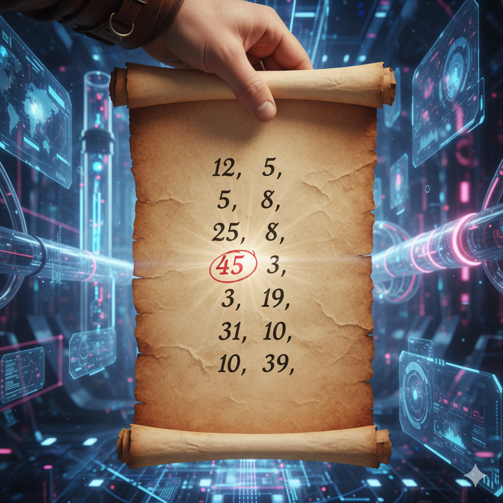
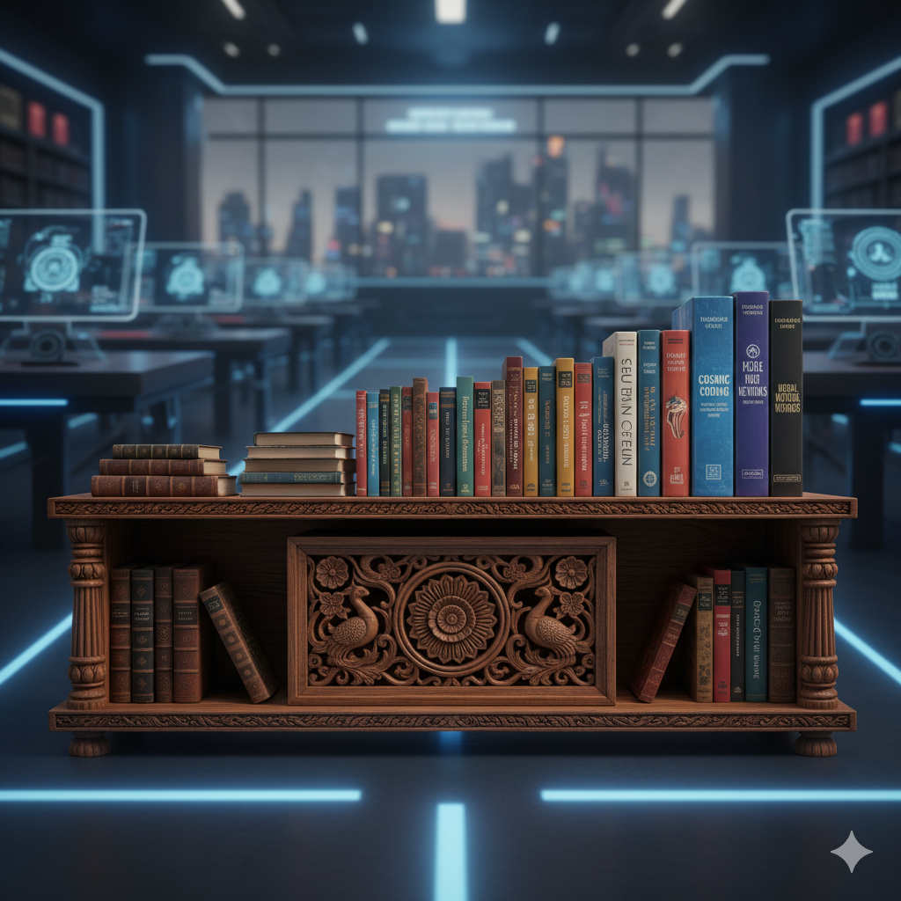
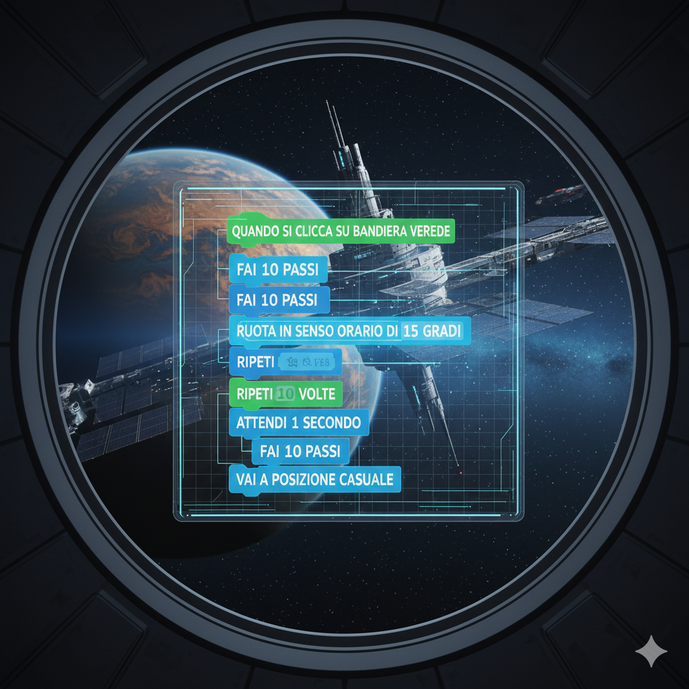
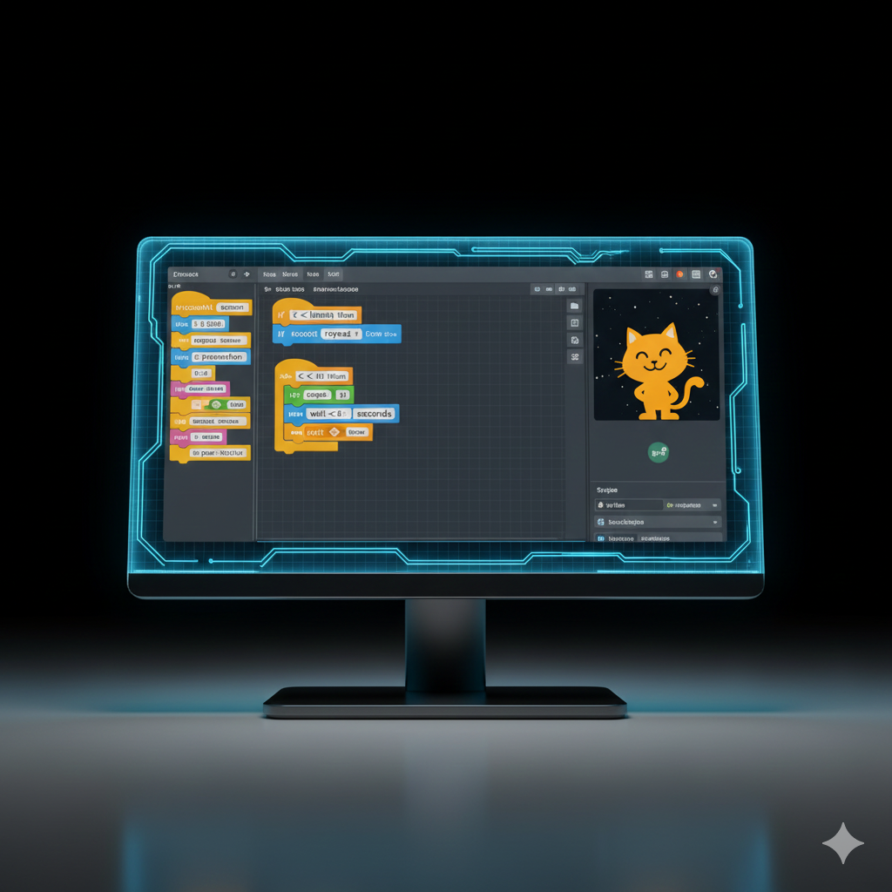
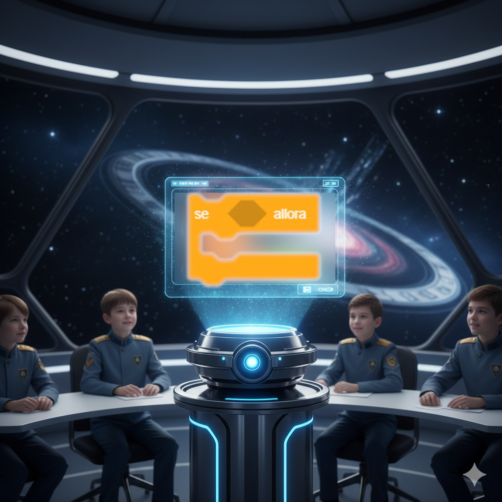
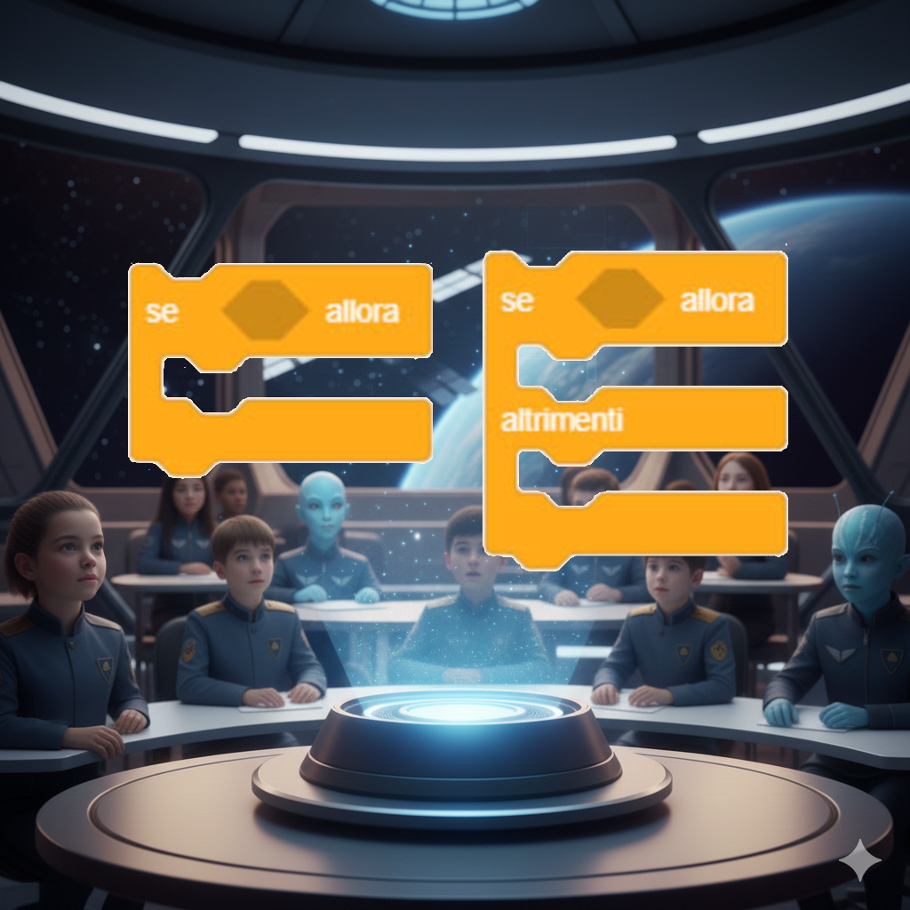
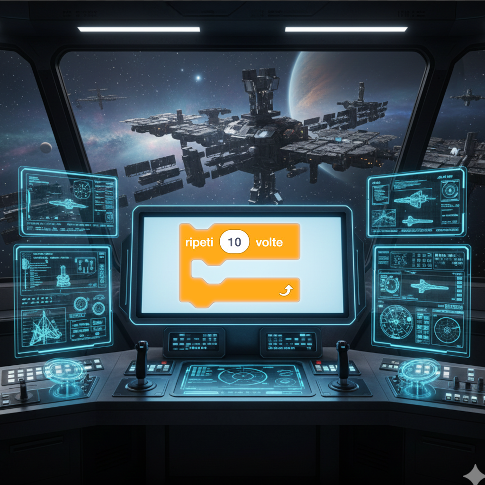
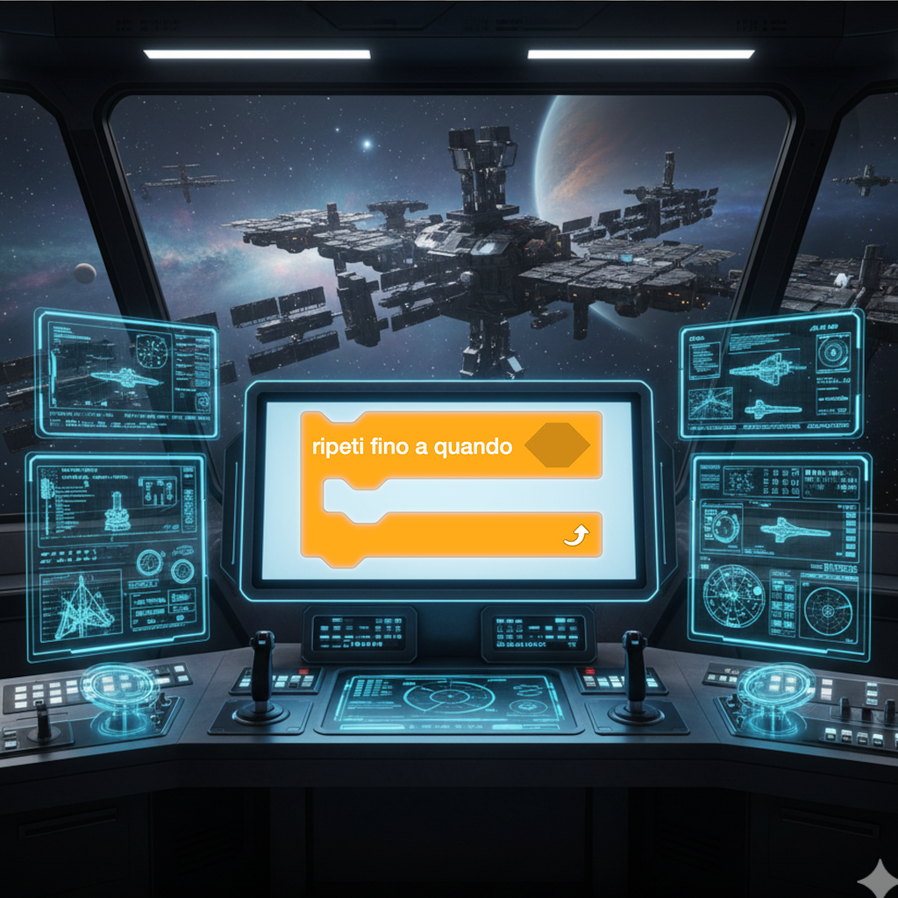
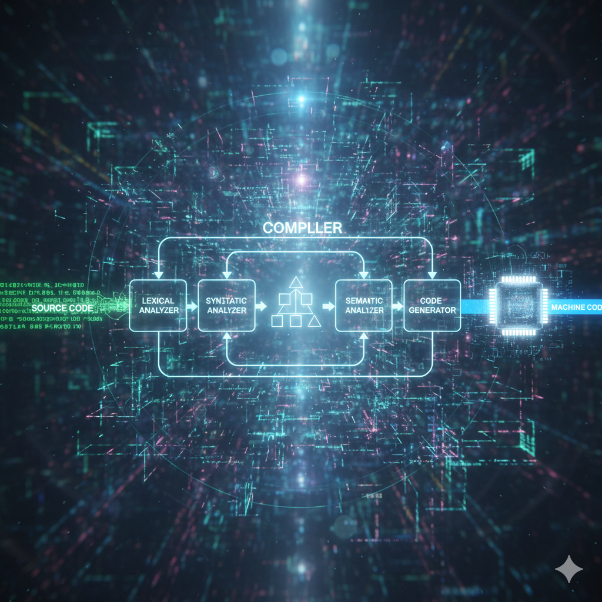

مرحباً بالأطفال، نحن الأساتذة لوتشيانو وتشيارة، مدربوكم الفضائيون! نحن هنا لنقودكم في مغامرة استثنائية في عالم البرمجة، حيث سوف نتعلم كيفية إعطاء تعليمات للحواسيب لإنشاء ألعاب ورسوم متحركة ومهام فضائية!
رسالة من الأستاذة تشيارة: "تذكروا، في الفضاء كما في البرمجة، كل رحلة عظيمة تبدأ بخطوة صغيرة. معاً سوف نستكشف مجرات المعرفة!"
هل تعلم؟ البرمجة للجميع! آدا لافليس، عالمة رياضيات بارعة، تعتبر أول مبرمجة في التاريخ. اليوم، تستمر نساء مثل كايتي بومان، التي ساهمت في تصوير ثقب أسود، في تحقيق اكتشافات مذهلة في عالم التكنولوجيا!
في مهمتنا سنستكشف:
ما هي الخوارزميات المهمة 1.
كيف تعمل الحواسيب المهمة 2.
البرمجة بالمربعات المهمة 3.
مبادئ البرمجة الأساسية المهمة 4.
كيفية إنشاء مشاريع باستخدام سكراتش المهمة 5.
1. أي من هذه التسلسلات هي خوارزمية؟
أ. تنظيف الأسنان: أخذ فرشاة الأسنان، وضع المعجون، التنظيف، الشطف.
ب. لعب كرة القدم: الجري، القفز، الغناء، السباحة.
ج. قراءة كتاب: فتح، إغلاق، فتح، إغلاق.
2. من تعتبر أول مبرمجة في التاريخ؟
أ. تشارلز باباج.
ب. آدا لافليس.
ج. آلان تورينغ.
المهمة 1: ما هي الخوارزميات؟
الخوارزمية هي سلسلة من الخطوات المرتبة لحل مشكلة أو إكمال مهمة. نستخدمها كل يوم دون أن نلاحظ ذلك!
يقول الأستاذ لوتشيانو: "فكر في الخوارزمية كقائمة التحقق التي أستخدمها قبل الإقلاع! يجب تنفيذ كل خطوة بالترتيب الصحيح لتحقيق مهمة ناجحة."
أمثلة من الحياة الواقعية:
تحضير كوب من الشوكولاتة الساخنة
1
2
3
4
5
أخذ كوب.
إضافة مسحوق الكاكاو.
صب الحليب الساخن.
التحريك جيداً.
تذوق الشوكولاتة الساخنة.
عندما نحضر الشوكولاتة الساخنة، نتبع خطوات دقيقة: أخذ كوب، إضافة الكاكاو، صب الحليب الساخن، التحريك وأخيراً التذوق!
الذهاب إلى المدرسة

حتى الطريق للوصول إلى المدرسة هو خوارزمية: الاستيقاظ، ارتداء الملابس، تناول الفطور، أخذ الحقيبة واتباع الطريق إلى المدرسة.
1. أي من هذه التسلسلات يمثل خوارزمية صحيحة لتحضير شطيرة؟
أ. قطع الخبز، أكل الشطيرة، وضع الجبن.
ب. أخذ الخبز، إضافة المكونات، إغلاق الشطيرة.
ج. أكل الشطيرة، تحضير الشطيرة، شراء الخبز.
2. لماذا ترتيب الخطوات مهم في الخوارزمية؟
أ. لأن الحاسوب سيغضب وإلا.
ب. لأنها تبدو أجمل من الناحية الجمالية.
ج. لأن بعض الخطوات تعتمد على الخطوات السابقة.
🔍
تعمق أكثر
اكتشف أمثلة أخرى للخوارزميات.
📚
التاريخ
تعرف على مخترعي الخوارزميات.
المهمة 2: الخوارزميات في علوم الحاسوب
في علوم الحاسوب، الخوارزمية هي سلسلة من التعليمات التي نعطيها للحاسوب لتنفيذها لحل مشكلة.
تقول الأستاذة تشيارة: "الحواسيب مثل رواد الفضاء المطيعين: يتبعون التعليمات التي نعطيها لهم بالضبط. لهذا يجب أن نكون دقيقين جداً!"
أمثلة من العالم الرقمي:
إيجاد أكبر رقم في قائمة

ابدأ
خذ الرقم الأول كـ "الحد الأقصى"
لكل رقم في القائمة:
إذا كان الرقم أكبر من "الحد الأقصى"
حدث "الحد الأقصى" بهذا الرقم
النهاية
ترتيب الكتب حسب الطول

تخيل أنك تحتاج لترتيب كتبك من الأصغر إلى الأكبر. ستتبع خطوات دقيقة، تماماً كما يفعل الحاسوب!
هل تعلم أن...غرايس هوبر، عالمة بارعة، اخترعت أول مترجم، برنامج يترجم اللغة البشرية إلى تعليمات للحاسوب؟ اكتشافاتها جعلت البرمجة كما نعرفها اليوم ممكنة!
1. ماذا يفعل خوارزمية الترتيب؟
أ. يحذف البيانات غير الضرورية.
ب. ينشئ بيانات عشوائية جديدة.
ج. ينظم البيانات بترتيب محدد.
2. لماذا يجب أن تكون الخوارزميات دقيقة عند برمجة الحواسيب؟
أ. لأن الحواسيب تنفذ بالضبط ما يقال لها.
ب. لأن الحواسيب بطيئة.
ج. لأن الحواسيب تشعر بالملل بسهولة.
⚙️
المترجم
كيف يعمل المترجم.
👩💻
النساء في التكنولوجيا
نساء أخريات مهمات في التكنولوجيا.
المهمة 3: كيف تعمل الحواسيب
الحواسيب هي آلات استثنائية تعالج المعلومات باتباع تعليمات دقيقة.
يقول الأستاذ لوتشيانو: "فكر في الحاسوب كمركز التحكم بالمهمة: يستقبل المعلومات، يعالجها وينتج النتائج!"
المكونات الرئيسية للحاسوب:
وحدة المعالجة المركزية - دماغ الحاسوب
وحدة المعالجة المركزية هي دماغ الحاسوب التي تنفذ تعليمات البرامج.
الذاكرة - مكتب العمل
ذاكرة الوصول العشوائي مثل مكتب حيث يحتفظ الحاسوب بالمعلومات التي يستخدمها في تلك اللحظة.
1. ماذا تفعل وحدة المعالجة المركزية في الحاسوب؟
أ. تنفذ تعليمات البرامج.
ب. تعرض الصور على الشاشة.
ج. تخزن الملفات على المدى الطويل.
2. أي مكون من مكونات الحاسوب يشبه مكتب العمل؟
أ. القرص الصلب.
ب. ذاكرة الوصول العشوائي.
ج. بطاقة الفيديو.
المهمة 4: البرمجة بالمربعات
البرمجة بالمربعات هي طريقة بسيطة ومرئية لتعلم البرمجة.
تقول الأستاذة تشيارة: "المربعات مثل مكعبات البناء: لكل منها وظيفة محددة ويمكنها معاً إنشاء أشياء مذهلة!"
أنواع المربعات:
مربعات الحركة

مربعات الحركة تسمح بتحريك الشخصيات على الشاشة.
مربعات التحكم

مربعات التحكم تحدد متى وكيف يتم تنفيذ التعليمات.
1. ما هي ميزة البرمجة بالمربعات؟
أ. إنها أسرع من البرمجة النصية.
ب. إنها أسهل للفهم للمبتدئين.
ج. إنها أقوى من البرمجة النصية.
2. ماذا تفعل مربعات التحكم؟
أ. تغير لون الخلفية.
ب. تضيف أصواتاً للمشروع.
ج. تحدد متى تنفذ التعليمات.
المهمة 5: التعليمات الشرطية
التعليمات الشرطية تسمح للحاسوب باتخاذ قرارات بناءً على شروط معينة.
يقول الأستاذ لوتشيانو: "الشروط مثل مفترقات الطرق أثناء الاستكشاف: اعتماداً على ما تصادفه، تقرر أي طريق تسلك!"
أمثلة على الشروط:
إذا... فإن...

إذا أمطرت، فإنني آخذ المظلة. هذا شرط بسيط نستخدمه كل يوم!
إذا... فإن... وإلا...

إذا كنت جائعاً، فإنني آكل، وإلا أستمر في اللعب. هذا الشرط له نتيجتان محتملتان.
1. ماذا تفعل التعليمات الشرطية؟
أ. تنفذ نفس الإجراءات دائماً.
ب. تكرر إجراءاً عدة مرات.
ج. تقرر أي إجراء تنفذ بناءً على شرط.
2. أي من هذه الجمل هو مثال على شرط "إذا-فإن-وإلا"؟
أ. إذا أمطرت، آخذ المظلة، وإلا أضع النظارات الشمسية.
ب. إذا أمطرت، آخذ المظلة.
ج. آخذ المظلة وأضع النظارات الشمسية.
المهمة 6: الحلقات والتكرارات
الحلقات تسمح بتكرار إجراء عدة مرات دون الحاجة لإعادة كتابته كل مرة.
تقول الأستاذة تشيارة: "الحلقات مثل محرك مركبة فضائية: بمجرد تشغيلها، تستمر في العمل حتى توقفها!"
أنواع الحلقات:
حلقة "كرر لـ"

كرر لـ 10 مرات: اقفز. هذه الحلقة ستنفذ إجراء القفز بالضبط 10 مرات.
حلقة "كرر حتى"

كرر حتى تنتهي الواجبات: ادرس. هذه الحلقة ستستمر حتى يتم تحقيق الشرط.
1. لماذا نستخدم الحلقات في البرمجة؟
أ. لتجنب تكرار نفس الرمز عدة مرات.
ب. لأنها تبدو أجمل.
ج. لأن الحواسيب تفضلهم.
2. أي حلقة تكرر عدداً محدداً من المرات؟
أ. كرر لـ.
ب. كرر حتى.
ج. كرر دائماً.
المهمة النهائية: رحلتك في البرمجة تستمر!
أحسنت يا رائد الفضاء! لقد أكملت بنجاح تدريبك الأساسي في البرمجة. ولكن هذه مجرد بداية رحلتك!
يقول الأستاذ لوتشيانو: "الآن حان دورك! مثل رائد فضاء حقيقي، يجب أن تتحكم بمركبتك الفضائية وتستمر في استكشاف مجرات البرمجة. الفضول سيكون وقودك!"
وجهاتك التالية:
سكراتش - كوكب الإبداع
قم بزيارة سكراتش لإنشاء قصص تفاعلية وألعاب ورسوم متحركة بالبرمجة بالمربعات. إنه المكان المثالي لبدء مغامرتك!
Code.org - نجم التعلم
استكشف Code.org لاكتشاف دورات مجانية وأنشطة ستوجهك خطوة بخطوة في عالم البرمجة.
روح المشاركة: عمل العديد من الأشخاص حول العالم لإنشاء موارد مجانية لمساعدتك على التعلم. هذه هي روح المصدر المفتوح والبرمجيات الحرة - مشاركة المعرفة لخير الجميع!
التصفح الآمن في الكون الرقمي:
وجها الإنترنت
الإنترنت مثل كون بوجهين: يمكن أن يكون مكاناً رائعاً للتعلم والنمو، ولكن أيضاً خطيراً إذا لم يستخدم بحكمة.
كيفية التعرف على موقع إلكتروني موثوق:
✅ ابحث عن المواقع الرسمية للمؤسسات التعليمية (المدارس، الجامعات، المتاحف)
✅ تحقق من أن عنوان الويب يبدأ بـ "https://" (حرف "s" يعني آمن)
✅ تحقق من تحديث المعلومات (ابحث عن تاريخ النشر)
✅ ابحث عن مواقع بلغتك الأم وبالعربية لمقارنة المعلومات
❌ كن حذراً من المواقع التي تحتوي على إعلانات كثيرة أو طلبات للبيانات الشخصية
تذكر دائماً: عندما تتصفح الإنترنت، افعل ذلك دائماً تحت إشراف شخص بالغ تثق به. شارك معه اكتشافاتك واسأل عن المساعدة عندما لا يقتنعك شيء!
الخوارزمية النهائية للمعرفة:
1
2
3
4
5
كن فضولياً: اسأل أسئلة عن كل ما يهمك
ابحث عن الموارد: استخدم الإنترنت بأمان للعثور على المعلومات
جرب: حاول، أخطئ، تعلم، وحاول مرة أخرى
شارك: أخبر الآخرين بما اكتشفته
استمر في التعلم: رحلة المعرفة لا تنتهي أبداً!
ما هي خطوتك التالية في رحلة البرمجة؟
أ. سأستكشف سكراتش و Code.org بمساعدة شخص بالغ!
ب. سأستمر في التعلم بفضول وانتباه!
ج. سأشارك ما تعلمته مع أصدقائي!
ملاحظة: في هذه المهمة، جميع الإجابات صحيحة! المهم أن تستمر في رحلة التعلم الخاصة بك.
×
أمثلة أخرى للخوارزميات
إليك أمثلة أخرى للخوارزميات التي نستخدمها كل يوم:
تحضير شطيرة: أخذ الخبز، إضافة الجبن، الخضار، التتبيل والإغلاق.
غسل الأطباق: ملء الحوض، إضافة المنظف، الغسيل، الشطف، التجفيف.
رسم صورة: اختيار الألوان، رسم المخطط، التلوين، إضافة التفاصيل.
تقول الأستاذة تشيارة: "راقب أفعالك اليومية: ستكتشف أن الكثير من سلوكياتك تتبع خوارزميات دقيقة!"
×
تاريخ الخوارزميات
كلمة "خوارزمية" مشتقة من اسم عالم الرياضيات الفارسي الخوارزمي، الذي عاش في القرن التاسع الميلادي. قدمت كتبه الأرقام الهندية (التي نستخدمها اليوم) وطرق حل المعادلات.
على مر القرون، ساهم العديد من علماء الرياضيات في تطوير الخوارزميات، ولكن مع ظهور الحواسيب أصبحت الخوارزميات أساسية لحياتنا اليومية.
معلومة: أول خوارزمية حاسوبية كتبتها آدا لافليس عام 1843 لآلة تشارلز باباج التحليلية، قبل وقت طويل من وجود الحواسيب الحديثة!
×
كيف يعمل المترجم

المترجم هو برنامج خاص يترجم الرمز المكتوب بلغة برمجة (مثل Python أو Java) إلى لغة الآلة، التي يمكن للحاسوب فهمها وتنفيذها مباشرة.
تحدث عملية الترجمة في عدة مراحل:
التحليل المعجمي: يتم تقسيم الرمز إلى "رموز" (كلمات مفتاحية، معرّفات، إلخ).
التحليل النحوي: التحقق من أن الرموز منظمة بشكل صحيح وفقاً لقواعد اللغة.
التحليل الدلالي: التحقق من أن للرمز معنى منطقي.
توليد الرمز: إنتاج الرمز بلغة الآلة.
يقول الأستاذ لوتشيانو: "فكر في المترجم كمترجم عالمي يترجم أفكارك إلى لغة يمكن للحاسوب فهمها!"
×
نساء مهمات في التكنولوجيا
بالإضافة إلى آدا لافليس وغرايس هوبر، قدمت العديد من النساء الأخريات مساهمات أساسية في علوم الحاسوب والتكنولوجيا:
هيدي لامار: ممثلة ومخترعة، طورت تكنولوجيا هي أساس الواي فاي والبلوتوث.
راديا بيرلمان: تعرف باسم "أم الإنترنت"، اخترعت بروتوكول الشجرة الممتدة.
أنيتا بورغ: أسست معهد النساء والتكنولوجيا واجتماع غرايس هوبر.
مارغريت هاميلتون: أدارت تطوير البرمجيات لبرنامج أبولو التابع لناسا.
هل تعلم؟ كانت النساء أساسيات في تطوير علوم الحاسوب منذ بداياته، ويستمرن في تحقيق اكتشافات ثورية في جميع مجالات التكنولوجيا!